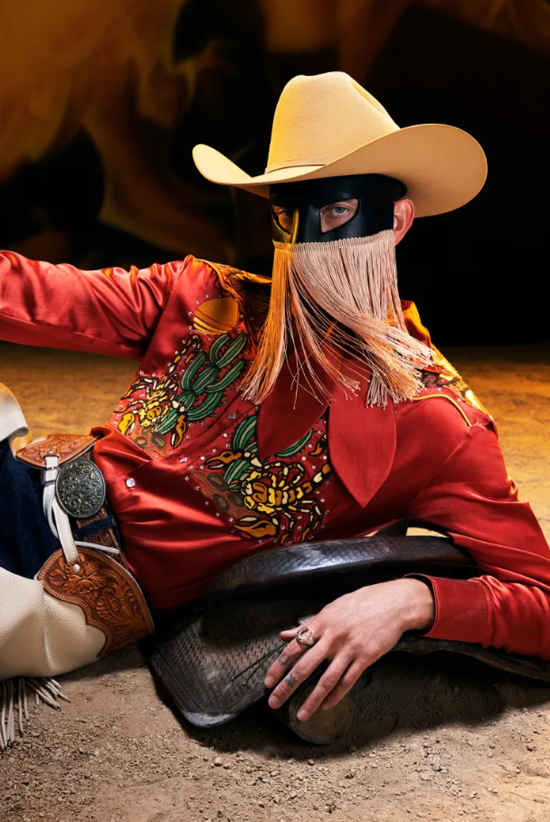

Orville Peck is a country pop musician, songwriter, and actor known for his fringed mask, mysterious persona, and eye-catching style. His music explores loneliness, queer identity, love, heartbreak, and belonging while blending classic and outlaw country with modern alternative influences. His mask represents identity and the idea that anyone could be behind the songs and emotions he expresses. I’ve followed his work since shortly after his debut. His music reminds me that it is okay to feel deeply, express emotions, break from expectations, and create something completely my own. That's where it blends into a more creative inspiration. He shows that artists do not have to fit into one category or follow traditional ideas of what they are supposed to be. This amplified my ability to turn personal emotion and individuality into art and confidently express myself.
I discovered Elisha Zepeda through a TikTok. He is a graphic designer specializing in book covers, with experience working for major publishers and creative companies. He inspires me as a graphic designer because his work shows me the importance of developing my own creative identity and how typography, color, imagery, and composition can work together to communicate a story and create an emotional response. His willingness to experiment across different creative fields encourages me to stay curious, take risks, and create work that feels personal and meaningful rather than simply following trends.
Cole Poska, is a New York City-based creative director and designer focused on branding, merchandise, and visual campaigns. His ability to combine graphic design with pop culture and physical products inspires me, especially his bold “Cool Shit” concepts and willingness to take risks. His work shows how personal experiments can lead to professional \ collaborations, which encourages me to be bold and explore my own ideas.
While creating this page, I learned more about how HTML can be used to organize images, text, and links
into a basic format for now. Learning about how to use relatice paths to connect image files to my HTML document
and how to resize images was really affirming that I feel that I somewhat know what I'm doing. Creating hyperlinks
using the proper tags and using the target = _ blank attribute has been super helpful with having it open in another
tab. I honestly hate when websites have links that don't open in a different tab. My three inspirations are different,
but they all connect through creativity, individuality, and self-expression. I organized the page as accordance to how
Professor Oakley had his presented in his lecture. I am just learning the basics so I didn't want to go into anything crazy
at the moment. In HTML, it's very relieving that hitting "enter" while writing out lines of code doesn't affect how they
format on the web page. Doing so makes it easier to organize by keeping them all compact and easy to scroll through for me personally.
Trying to learn how to do this while sick is not for the weak.
I had several issues with putting in the code and it formatting correctly on the "live page" but eventually figured it out.